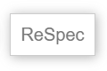
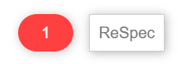
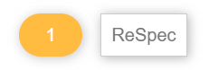

Copyright © DAISY Consortium 2023
Guide to managing repositories and editing DAISY specifications.
Finding people to write technical specifications is challenge enough, and the last anything wants when taking on this kind of task is to be overwhelmed by the process of managing the documents. To help make the process as smooth as possible, DAISY uses two widely implemented tools to help authors and editors navigate the ins and outs of specification work: ReSpec and GitHub.
ReSpec is a tool that lets authors and editors focus on writing the text — it takes care of formatting the document. Consequently, the only thing you have to know to write DAISY specifications is some basic HTML. This guide introduces ReSpec and explains its authoring conventions.
GitHub is a content management system (CMS). Although commonly associated with coding projects, CMSes provide a convenient way to author documents. The full authoring history of documents is always available, for example, so you never have to worry about making mistakes. They are easily undone. GitHub also allows others to review your changes before they are merged into a document.
Using GitHub can be a little more challenging than using ReSpec, but there are many user tools available that can hide the technical details. This guide focuses on the underlying commands to help you understand what happens at each stage of the process but is expected that you will use one of the available tools to simplify the process.
ReSpec is a JavaScript tool developed by the W3C to make editing their specifications easier and more consistent. The code allows you to focus on writing the content of the specification, while it takes care of adding common boilerplate and formatting when the document is viewed live.
Although developed for W3C, ReSpec is no longer exclusively for developing W3C specifications. DAISY, for example, customizes a "base" profile to format its specifications and notes.
The functioning of ReSpec is meant to be largely transparent to anyone editing specifications. Using the tool only requires a script element to call in the ReSpec code and a block of JSON metadata to initialize it. Once these are set, editors will primarily be working in HTML to author the content. This means you can use whatever HTML editor you are most comfortable with.
This section covers the setup and initialization of ReSpec. Information on how to tag HTML documents to take advantage of ReSpec's built-in formatting is covered in the next section on editing.
For detailed information on all aspects of ReSpec, please visit the ReSpec Documentation.
Configuring a ReSpec document for the first time is typically done by DAISY staff. You can skip this subsection if you are not interested in how the code is set up.
The ReSpec source code is hosted at https://www.w3.org/Tools/respec/respec-w3c
To call in this code, you only need to add a script tag to the HTML header.
Note the use of the class attribute value "remove" on the
script tag. This class ensures that ReSpec will remove the script
tag (i.e., itself) when exporting a static version of the specification for publication.
The only other requirement to get ReSpec working is to add the initialization metadata.
ReSpec uses JSON metadata to initialize. This metadata is normally embedded in the
head of the HTML document using a script tag. Although it is
possible to import the metadata, doing so is not recommended. When stored outside the
specification, the metadata is often forgotten and not updated.
The script tag must contain a respecConfig variable definition, which
in turn must be an object. They key/value pairs in this object define the intialization
parameters.
The initialization metadata controls such aspects of the document as the links at the top of the document (current version, previous version, etc.), the lists of editors and authors, etc.
Setting the various metadata properties goes beyond this tutorial, however. Refer to the ReSpec Documentation for more information.
Once the ReSpec code and initialization metadata are set, all you need to do to verify the setup is open the document in a browser.
Although you can open a ReSpec document on your local file system by double-clicking it, it is often better to use a server like Apache or IIS to serve the document. If your specification uses ReSpec file includes, for example, these will only work from a server.
If the configuration is successful, you will get an HTML document with a table of contents on one side and a ReSpec button positioned at the top left.
If the ReSpec button is present, there is nothing else you need to do but reload the document to view your changes as you go. If you click on the ReSpec button, it only provides options to export the specification (for publication) and to search for references.
If the ReSpec button is missing, then initialization failed. In this case, check the browser's JavaScript console (in the browser tools) for more information. The most common problem is invalid JSON in the initialization metadata (e.g., a missing comma).
ReSpec will alert you to any errors and warnings it can detect.
For errors, a red oval button with a number indicating the number of errors will appear beside the ReSpec box at the top of the document.
Click on the oval to get a list of errors.
Warnings are the same, but the indicator is a yellow oval.
Make sure all errors are fixed. Not all warnings need fixing but they need to be evaluated on a case-by-case basis.
The title of the specification is specified in the document's title tag.
ReSpec automatically generates an h1 in the body using the same value.
You can add an h1 tag with the id "title" to the body if you need html
tags in the title, but this is rare.
To add a subtitle, include an h2 tag with the id "title".
Do not place the title and subtitle inside section tags.
Subtitling specifications is usually rare. Use an abstract to describe the specification.
ReSpec will automatically add a W3C copyright statement if one is not provided in the document. To avoid this behavior, add a DAISY copyright statement after the opening body tag.
If the document has a title or subtitle in the body, the copyright can proceed these tags.
ReSpec requires every document have an abstract that briefly explains the document.
To add the abstract, include a section with the id "abstract".
The abstract should only be a few sentences at most. Leave longer explanations for an introductory section.
Do not add a heading for the abstract. ReSpec will automatically add one.
If you are writing a document that does not need an abstract (e.g., a note), you can suppress the
section by adding the html hidden attribute. Removing the table of contents entry
requires scripting, however. Contact DAISY staff to help with this task.
DAISY specifications do not include status sections. Do not include a section tag
with the id "sotd" as this will trigger ReSpec to include W3C boilerplate.
There is no way to overwrite the W3C boilerplate. ReSpec will append any text you write in a status section after the boilerplate.
If DAISY specifications add status sections in the future, a new method for including them will be developed.
ReSpec automatically generates the table of contents from the heading structure.
How many levels deep the table of contents go can be controlled by the initialization metadata, but it is best not to limit user access.
Individual sections can be omitted from the table of contents by adding the class
"noTOC" to them.
You cannot use the noTOC class to suppress required sections, like the abstract.
Common terminology can be defined in a terminology section.
Use a dl tag for definition lists.
Each term definition must have a <dfn> tag around the term:
Once a term is defined, you can reference it from an <a> tag anywhere in the
document:
<a>Term</a>Only the first instance of a term in a new section is linked to its definition.
ReSpec looks for certain specially identified section elements, as explained later.
Although you can write the rest of the specification without using section elements, it is not recommended – sectioning helps identify structural issues.
ReSpec will attempt to add sections when they are missing.
Every section must have a heading.
Ensure that the number of heading tag matches its nesting, but ReSpec will also attempt to correct misnumbering.
The top-most sections must have <h3> headings – ReSpec uses <h1> for the document title.
ReSpec will auto-number the headings.
Specifications usually have the following top-level sections:
Some of these sections are automatically generated by ReSpec.
Normative sections include requirements on the author or reading system.
Normative statements are identified by special keywords, as defined in RFC2119:
The keywords SHALL and SHALL NOT are typically not used outside ISO.
Normative keywords must be in uppercase. Lowercase keywords have no normative weight, but it best to avoid these as they confuse most readers.
Every specification needs a blank section with the id "conformance" – ReSpec will add boilerplate language about the keywords:
<section id="conformance"/>All sections are normative by default.
Informative sections are for purely explanatory or illustrative purposes.
They must not contain normative keywords – also best to avoid lowercase keywords.
Informative keywords must be identified by adding an "informative" class:
<section class="informative">Examples and notes are always considered informative – no special marker is needed.
When referencing another specification, you must cite the specification.
ReSpec supports a shorthand syntax using brackets:
[[shortname]]To look up the shortname for a specification, go to https://specref.org.
References may be normative or informative.
References inherit their status from the type of section they are in.
To mark an informative reference in a normative section, add a question mark before the shortname:
[[?shortname]]Normative references are not allowed in informative content.
ReSpec automatically builds a references section and sorts the references into normative and informative subsections.
ReSpec also has a shorthand for linking to element and attributes in other specifications:
[^element^] [^element/attribute^]Primarily used for linking to HTML and SVG.
To look up elements and attributes you can reference, go to https://respec.org/xref/.
If an element or attribute is specified in more than one specification, you may need to tell ReSpec which one you mean by adding a data-cite attribute:
<p data-cite="html">The [^link^] element [[html]] …</p>When citing elements and attributes, also cite the specification.
Two main types of notes:
To add a regular note, use the class "note":
<div class="note">
<p>Note text</p>
</div>You can put the class on a paragraph, they're easy to miss when editing.
For editor's note, use the class "ednote" instead.
To add examples, use an <aside> element with the class "example".
Add a title for the example using a title attribute.
If necessary, add a description in a <p> tag.
Use <pre> and <code> elements to wrap the example markup.
Make sure to escape opening brackets in the example.
<aside class="example" title="Adding foo to bar">
<p>The example shows …</p>
<pre><code><p> …</p></code></pre>
</aside>ReSpec will automatically number examples.
Marking a section as an appendix changes its numbering to alphabetic.
Add the class "appendix" to the section tag:
<section class="appendix">Appendixes are often informative, in which case add both classes:
<section class="appendix informative">Appendixes must be the last sections in the document - ReSpec will convert all sections after the first marked as an appendix to appendices, whether you wanted them as appendixes or not!
ReSpec currently doesn't help you out with change logs.
Change log entries should be dated and provide a concise description of the change.
Best practice is to include a link to the github issue for each entry.
A change log may not be needed for a new specification, but can help readers track changes since the last publication.
Although ReSpec provides a default look and feel, it does not cover everything you may need when writing a specification.
To use custom styling, simply add a <style> element to the document header with the
necessary css.
Do not change the appearance of specifications just because you don't like the ReSpec defaults! Limit custom css to unhandled needs.
Cloning a repository downloads a copy of the repository to your local machine.
After cloning, create branches to work on changes.
After editing, you create a pull request from the branch in the source repository.
Cloning is the preferred work mode for editors.
Forking a repository makes a copy under your GitHub account.
Forking is used when you don't have access to edit the source repository.
You still need to clone your fork to your local machine to edit the files.
After editing, you create a pull request to the original repository from the fork.
You don't have to use branches to edit, but they are advised.
Forks are more difficult to work with as you have to keep your fork up-to-date.
From GitHub
Go to the repository.
Click on the "<> Code" button.
Select "Open with GitHub Desktop" to download.
You will be prompted where to save the repository.
From the command line.
Create a directory for your repositories.
Get the URL of the repository - for example, https://github.com/daisy/ebraille.
Run the command:
git clone https://github.com/daisy/ebrailleA new subdirectory named "ebraille" will be created with the source.
Go to the "Pull requests" section of the repository on Github.
Click the "New pull request" button.
Use a descriptive title.
Describe the changes.
Link a related issue using # followed by the issue number.
Automatically close an issue when merged by adding "Fixes" before the issue number – "Fixes #23".
Pull requests should always be reviewed by at least one other editor before merging.
It is best to pick editors also involved with the issue you are addressing, but if in doubt never worry about asking for too many reviewers.
If you don't request a review, editor's may not be aware you want their input.
To request a review, go to the "Reviewers" section in the pull request and click on the heading.
Enter the GitHub usernames of the people you want to review and select their accounts.
If you are an editor, you can merge your pull request after receiving approvals.
If you are not an editor, let the editors decide when to merge.
Open the pull request to review.
Click on the "Add your review" button or select the "Files changed" tab.
Click on "Review changes" and select approve if everything is okay.
Otherwise, add comments to the changes by clicking on the + button (labelled "Add line comment").
Select the closest line for comments to avoid confusion.
Click "Start a review" if you expect to add more than one comment, otherwise click "Add single comment".
Click the "Finish your review" button to post your comments.
Select either "Comment" if they are suggestions or "Request changes" if fixes are needed.
To make general comments not specific to the changed source, use the text box at the bottom of the Conversation tab.
Sometimes you might want to make a change to another person's pull request – to fix a typo, or modify the text after a discussion.
Follow these steps:
The pull request is automatically updated with the commit.
Users will be notified of changes to an open pull request.
Sometimes you may want to propose extensive changes to a pull request and have them reviewed before modifying the original pull request.
Follow these steps:
When opening the new pull request, make sure the base branch is not "main".
From GitHub
Go to the "Code" section of the repository.
Click the button that shows the Main branch.
Is actually a details element with the summary "Click branches or tags".
Enter a name for your branch and click the option to create it.
From the command line.
From the directory containing the repository source, run:
git branch branch-nameTry to make branch names short but unique – e.g., name after the issue number it addresses.
Add a prefix to make the branch name more specific – e.g., "metadata/xyz".
Make sure you are in the "main" branch when creating new branches.
To change to another branch, run:
git checkout branch-nameTo view the current branch you are in, run:
git branch --show-currentTo switch back to the main branch, run:
git checkout mainIf you are no longer using a branch, delete it -- stale branches are confusing to sift through later.
You can delete branches in GitHub as follows:
To delete from the command line, run:
git push origin –-delete branch-nameBranches are automatically deleted from the eBraille repository when a pull request is merged.
Running a "pull" request gets the recent commits, branches, etc., from the source repository.
If you create a branch in GitHub, you need to run a pull request first before you can check it out to work on it.
To perform a pull request, run:
git pullCommitting saves local changes – allows you to view new changes.
Commits require you to include messages explaining your changes.
To make a commit, run:
git commit –a –m "explanatory message"Note you have to "add" changed files before you can commit the changes.
You can commit changes to individual files or multiple files.
Commits can be made without pushing them to GitHub.
To add a file to the repository, run:
git add filename.xyzTo add all unversioned files, run:
git add -aTo check for unversioned files, run:
git ls-files --otherTo delete a file, run:
git rm filename.xyzTo rename a file, run:
git mv oldname.xyz newname.xyzPushing changes to GitHub saves them remotely.
To push commits, run:
git push origin branch-nameUndoing commits once they've been pushed can be tricky – more of a danger if pushing straight to main.
Pushing to a branch does not open a pull request.
Users are not notified of pushes to branches if no pull request is open.
Sometimes you need to changes branches or work on another issue while still editing.
Stashing your changes stores them away and leaves the branch "clean".
When you come back to the branch, you can "pop" the changes from the stash to continue working (or pop them in a new branch).
To stash changes, run:
git stash push –m "stash message"To view all stashed changes, run:
git stash listTo pop the top-most changes, run:
git pop